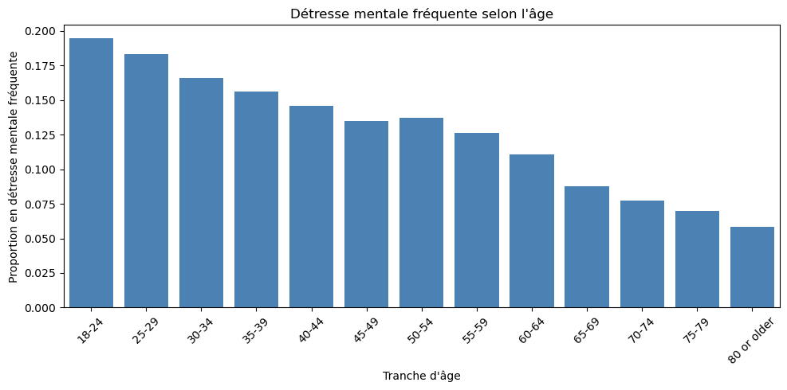
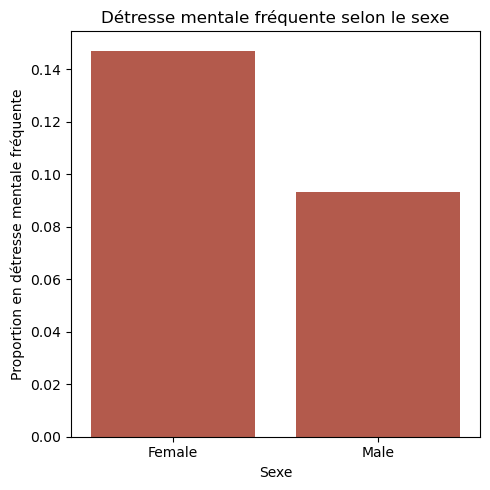
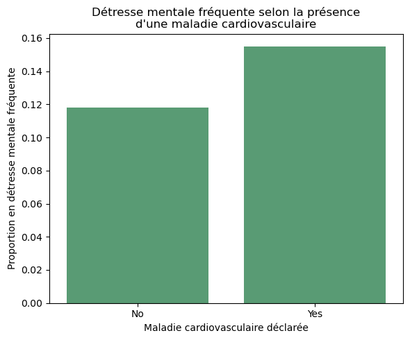
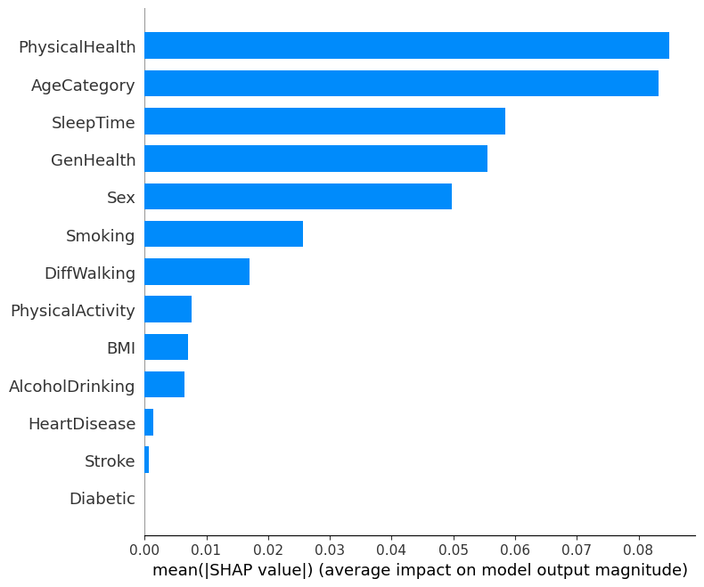
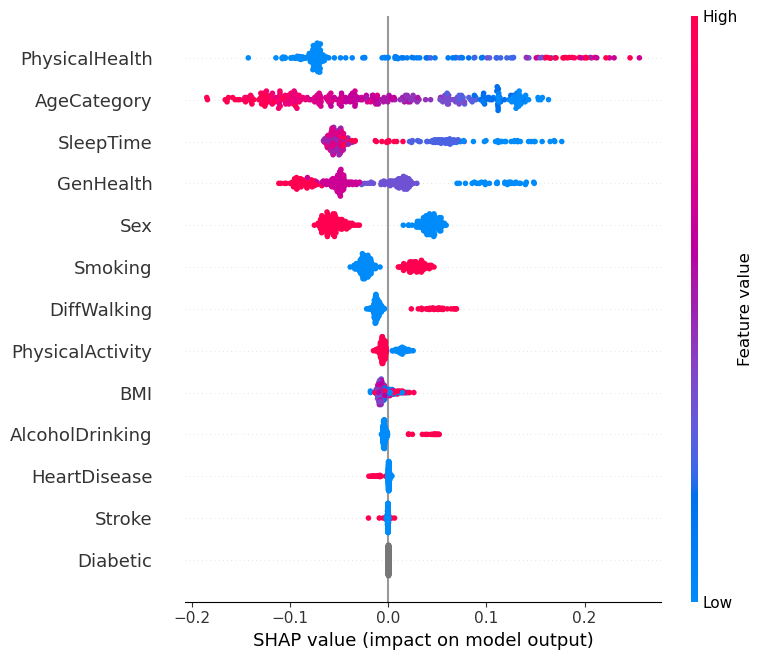

Santé mentale et maladies du cœur : une approche prédictive
« 12,1 % des personnes interrogées déclarent au moins 14 jours de mauvaise santé mentale sur les 30 derniers jours. »
Le BRFSS du CDC est une grande enquête américaine sur la santé et les habitudes de vie, le plus souvent utilisée pour prédire la présence d’une maladie cardiovasculaire. Ce projet renverse la question : existe-t-il un lien entre santé mentale et santé cardiovasculaire dans ces données, et peut-on prédire une détresse mentale fréquente à partir des informations disponibles ?
Objectif du projet
L’objectif est de :
- explorer le lien entre détresse mentale, santé physique et santé cardiovasculaire ;
- construire un modèle prédictif de la détresse mentale fréquente ;
- identifier, grâce à SHAP, les variables qui pèsent le plus dans les prédictions.
Données et préparation
Le jeu de données heart_2020_cleaned, issu du BRFSS, contient
319 795 personnes et 18 variables. J’en ai gardé 14, en retirant celles qui servaient
moins la question (origine, asthme, maladie rénale, cancer de la peau), afin de
conserver une analyse ciblée.
Variable cible. Plutôt que d’utiliser HeartDisease,
j’ai créé FrequentMentalDistress à partir de MentalHealth :
elle vaut 1 si la personne déclare 14 jours ou plus de mauvaise santé mentale sur
30 (seuil utilisé par le CDC), 0 sinon. HeartDisease devient alors
une variable explicative parmi les autres. MentalHealth est retirée
des variables explicatives, pour éviter que le modèle ne retrouve la cible
à partir de la variable qui la définit.
Choix de nettoyage. Aucune ligne n’a été supprimée : les lignes
identiques sont conservées, car plusieurs personnes peuvent avoir exactement le
même profil dans une enquête à nombre de variables limité, et les valeurs élevées
de MentalHealth ne sont pas des erreurs mais précisément les cas qui
m’intéressent.
Variables explicatives
| Variable | Signification |
|---|---|
PhysicalHealth |
Jours de mauvaise santé physique sur les 30 derniers jours |
GenHealth |
Santé générale déclarée (de « Poor » à « Excellent », variable ordonnée) |
AgeCategory |
Tranche d’âge (variable ordonnée) |
Sex |
Sexe (binaire) |
SleepTime, BMI |
Heures de sommeil par nuit, indice de masse corporelle |
HeartDisease, Stroke, Diabetic |
Maladie cardiovasculaire, AVC et diabète déclarés |
Smoking, AlcoholDrinking, PhysicalActivity |
Tabagisme, consommation d’alcool, activité physique |
DiffWalking |
Difficulté à marcher ou à monter les escaliers |
Méthodologie
- Prétraitement : variables oui/non encodées en 0/1, santé générale et âge transformés en variables ordonnées.
- Découpage : 80 % pour l’entraînement et 20 % pour le test, avec une séparation stratifiée pour conserver la même proportion de détresse mentale dans les deux groupes.
-
Modèle :
Random Forest de 200 arbres (profondeur maximale de 10) avec
class_weight="balanced", car la classe positive ne représente que 12,1 % des données. - Évaluation : AUC-ROC sur l’échantillon de test.
-
Explicabilité :
SHAP (
TreeExplainer) pour mesurer l’influence de chaque variable sur les prédictions.
Analyse descriptive
Avant la modélisation, le taux de détresse mentale fréquente a été comparé selon l’âge, le sexe et la présence d’une maladie cardiovasculaire.



Modélisation et explicabilité
Le Random Forest obtient une AUC-ROC de 0,787 sur l’échantillon de test : les variables disponibles contiennent un vrai signal pour distinguer les personnes avec et sans détresse mentale fréquente. L’analyse SHAP montre quelles variables jouent le plus dans les prédictions.


Principaux enseignements
- La santé physique (
PhysicalHealth) est la variable la plus influente : plus le nombre de jours de mauvaise santé physique est élevé, plus le modèle prédit une détresse mentale fréquente. - L’âge arrive ensuite, avec des tranches plus jeunes associées à plus de détresse, puis le sommeil, la santé générale déclarée et le sexe, avec des prédictions plus élevées chez les femmes.
- Les facteurs de mode de vie (tabagisme) et la difficulté à marcher viennent ensuite, avec un effet plus modéré.
- La maladie cardiovasculaire est associée à un taux de détresse plus élevé dans les données brutes (15,5 % contre 11,8 %), mais elle pèse très peu dans les prédictions une fois la santé physique, l’âge et la santé générale pris en compte.
Limites et perspectives
Les données sont transversales (une photographie à un instant donné) et déclaratives : on observe des associations statistiques, pas des relations de cause à effet, et ce qui est déclaré peut différer de l’état de santé réel. Une suite naturelle serait d’utiliser des données longitudinales, qui suivent les mêmes personnes pendant plusieurs années, pour travailler sur la prédiction des trajectoires de santé.
Compétences mobilisées
- Construction d’une variable cible et gestion d’un déséquilibre de classes (Python,
pandas,scikit-learn). - Modélisation prédictive avec un Random Forest, évaluée par l’AUC-ROC.
- Explicabilité des modèles (
shap). - Visualisation de données (
matplotlib,seaborn). - Regard critique sur les données de santé : données transversales, déclaratives, choix de nettoyage justifiés.